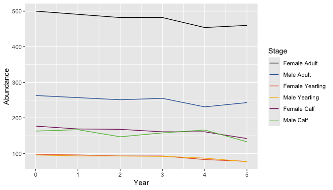
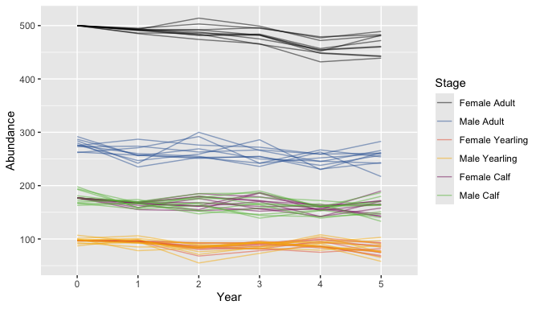

bbousims is a package to simulate Boreal Caribou population abundance over time from survival, ageing and birth processes. Survival and recruitment data from hypothetical composition surveys and collaring are simulated from key sampling parameters.
The output of bbs_simulate_caribou() is intended to be used as input data for bboutools functions for fitting survival and recruitment models and predicting population growth.
In addition, there is more general functionality for simulating population abundance given any set of stages, period duration, and survival, ageing and birth process matrices.
Installation
You can install the development version of bbousims from GitHub with:
# install.packages("remotes")
remotes::install_github("poissonconsulting/bbousims")Introduction
Simulate survival and fecundity rates
Simulate survival rates for each month, year and stage and fecundity rates for each year and stage. Rates are generated for female stages (female calf, female yearling and female adult). Female calf and female adult survival rates are specified from separate linear models, whereas female yearling survival is specified as an effect on female adult survival.
set.seed(1)
survival <- bbs_survival_caribou(
survival_adult_female = 0.85,
annual_sd_adult_female = 0.2,
trend_adult_female = -0.1,
month_sd_adult_female = 0.1,
survival_calf_female = 0.5,
yearling_effect = 0.05,
nyear = 5
)
fecundity <- bbs_fecundity_caribou(
calves_per_adult_female = 0.7,
annual_sd = 0.1,
nyear = 5
)View expected monthly survival rates (‘eSurvival’) for adult females (stage 3) by each month and year.
survival$eSurvival[, , 3]
#> [,1] [,2] [,3] [,4] [,5]
#> [1,] 0.9834999 0.9844767 0.9790802 0.9856860 0.9797460
#> [2,] 0.9854934 0.9863539 0.9815977 0.9874188 0.9821849
#> [3,] 0.9858478 0.9866875 0.9820455 0.9877267 0.9826186
#> [4,] 0.9856192 0.9864723 0.9817566 0.9875280 0.9823388
#> [5,] 0.9843153 0.9852446 0.9801095 0.9863948 0.9807433
#> [6,] 0.9868873 0.9876661 0.9833596 0.9886298 0.9838915
#> [7,] 0.9853533 0.9862219 0.9814206 0.9872969 0.9820133
#> [8,] 0.9838201 0.9847783 0.9794844 0.9859644 0.9801376
#> [9,] 0.9810780 0.9821956 0.9760254 0.9835796 0.9767862
#> [10,] 0.9863772 0.9871859 0.9827146 0.9881866 0.9832668
#> [11,] 0.9847123 0.9856185 0.9806110 0.9867400 0.9812291
#> [12,] 0.9847556 0.9856591 0.9806656 0.9867775 0.9812819Project population
Population is projected from survival and fecundity rates. Survival occurs at the end of each month and survival, ageing and birth occur at the end of each year, in that order.
Initial population abundance for each stage is determined from the initial number of adult females set by the user and the calculated stable stage distribution (see bbs_demographic_summary() for details). Population abundance for male stages are based on user-provided sex ratios.
set.seed(1)
population <- bbs_population_caribou(survival,
fecundity = fecundity,
adult_females = 500,
proportion_adult_female = 0.65
)The output is a matrix with abundance for each period and stage. The first period is the initial population and period 13 is the final month of the first year.
# projected population for first year
population[, 1:13]
#> [,1] [,2] [,3] [,4] [,5] [,6] [,7] [,8] [,9] [,10] [,11] [,12] [,13]
#> [1,] 177 169 155 142 138 129 122 116 112 107 102 97 180
#> [2,] 163 167 143 138 142 138 119 128 108 114 120 101 180
#> [3,] 97 96 96 94 94 93 91 89 87 86 84 83 94
#> [4,] 96 93 104 102 91 102 90 99 96 84 93 76 97
#> [5,] 500 491 480 473 469 460 447 436 432 429 424 418 492
#> [6,] 263 257 273 237 239 259 238 245 225 252 234 228 271
bbs_plot_population(population)
Simulate abundance, survival and recruitment data
Abundance, survival and recruitment data are simulated from hypothetical composition surveys and collaring, given the survival and fecundity rates used to project the population and a set of key sampling parameters. The output is a list of lists of the abundance, survival, and recruitment data.frames for each simulation.
set.seed(1)
data <- bbs_simulate_caribou(
survival = survival,
fecundity = fecundity,
nsims = 10,
adult_females = 500,
proportion_adult_female = 0.65,
month_composition = 9L,
collared_adult_females = 30,
group_size = 6,
group_coverage = 0.3
)
bbs_plot_population(data)
View collar survival data for the first simulation
# collar survival data for first simulation
print(data[[1]]$survival)
#> # A tibble: 60 × 6
#> Year Month PopulationName StartTotal MortalitiesCertain MortalitiesUncertain
#> <int> <int> <chr> <dbl> <int> <int>
#> 1 1 1 A 30 1 0
#> 2 1 2 A 29 0 0
#> 3 1 3 A 29 2 0
#> 4 1 4 A 27 1 0
#> 5 1 5 A 26 0 0
#> 6 1 6 A 26 0 0
#> 7 1 7 A 26 1 0
#> 8 1 8 A 25 0 0
#> 9 1 9 A 25 0 0
#> 10 1 10 A 25 0 0
#> # ℹ 50 more rowsWork with bboutools
The survival and recruitment data.frames in the output of bbs_simulate_caribou() are intended to be used as input data for model fitting functions in the bboutools package.
# fit model for each simulation
# we set year_start = 1 because we assume the projected population is for the biological year
fits <- lapply(1:length(data), function(x) {
survival <- data[[x]]$survival
bboutools::bb_fit_survival(data = survival, year_start = 1L)
})Information
Additional information is available from the bbousims website, including more in-depth articles:
- Get Started with bbousims.
- Work with bboutools.
- General tools (beyond Boreal Caribou).
Code of Conduct
Please note that the bbousims project is released with a Contributor Code of Conduct. By contributing to this project, you agree to abide by its terms.
License
The code is released under the Apache License 2.0
Copyright 2024 Province of Alberta
Licensed under the Apache License, Version 2.0 (the “License”); you may not use this file except in compliance with the License. You may obtain a copy of the License at
https://www.apache.org/licenses/LICENSE-2.0
Unless required by applicable law or agreed to in writing, software distributed under the License is distributed on an “AS IS” BASIS, WITHOUT WARRANTIES OR CONDITIONS OF ANY KIND, either express or implied. See the License for the specific language governing permissions and limitations under the License.